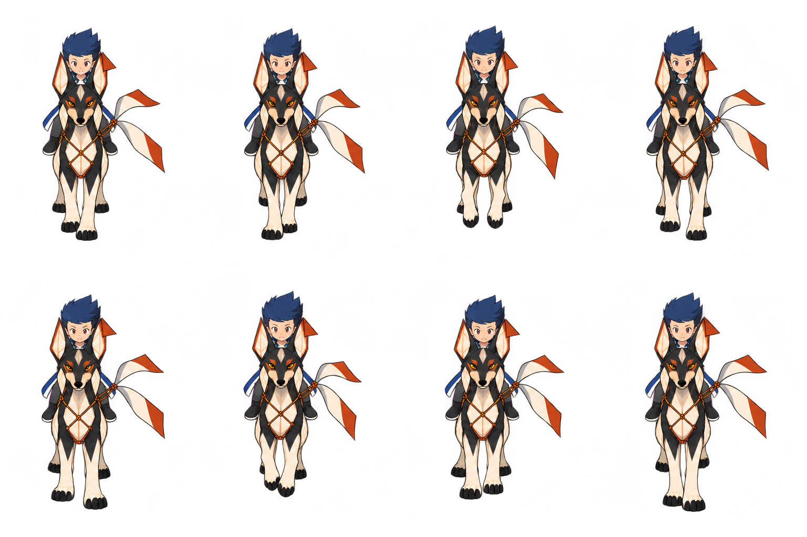
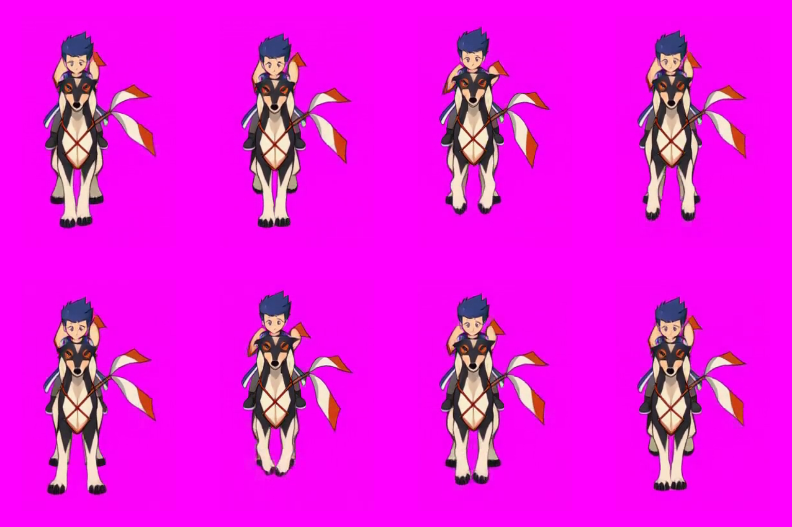

Caminhada frontal · correção conjunta
Oito frames corrigidos na mesma folha: orelhas de pipa, rosto, contornos e consistência das cores. Prévia para revisão; ainda não aplicada ao jogo.

Folha corrigida · 1536 × 1024 · células 384 × 512.
Antes: frames extraídos do vídeo, com orelhas deformadas.